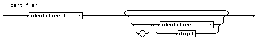
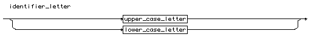
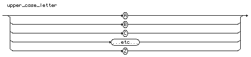
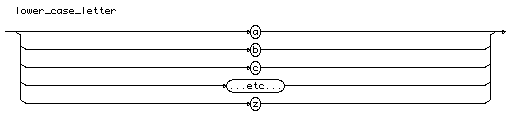
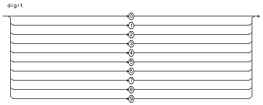

Ada Programlama Dili Temelleri
Bölüm 2
Başlangıç Bilgileri
Bölüm 2 Sayfa 1
2.1 - Ada Programlarının Yapısı
Ada programlama dili, sıkı yazılım denetiminin uygulandığı bir program dilidir. Bunun anlamı, kullanılacak her bilginin önceden tanımlanmış olması, değişkenlerin önceden tanıtılmış ve veri tiplerinin belirlenmiş olması gerektiğidir. Program yapısı da güçlü veri denetimi doktrinine uygun olarak düzenlenmiştir. Ada programları,
olarak üç bölümden oluşur. Ada programları veya daha özel adları ile Ada prosedürleri (Ada procedures),
-- Birliktelik (Context) Bölümü (Prosedürün Çalışmasında Yararlanılacak Dış Paketler) procedure Prosedür_Adı is -- Bildirimler Bölümü (Declarations) (Specifications) (Prosedürde Kullanılacak Sabit ve Değişkenlerin Tip ve Adlarının Belirtilmesi ile Diğer Tüm Gerekli Bilgilerin Açıklanması) -- begin -- Çalışabilir Program Adımları (Body) -- end Prosedür_Adı;-- (Prosedür Adının Prosedür Sonunda Belirtilmesi İsteğe Bağlıdır, Fakat Belirtilmesi İyi Bir Programlama Stilidir) --
Ada programlarında yukarıdaki kısımlardan gerekli olmayanlar kullanılmayabilir. Örnek olarak, eğer programda başka bir paketin içeriğinden yararlanılmayacaksa, programın birliktelik kısmında paket ismi bulunmayabilir. Aynı şekilde, eğer programda bir değişken kullanılmayacaksa, tanım kısmının da olmayacağı açıktır. Ada programlarında tanım ve içerik kısımları birbirinden bağımsız olarak derlenebilir. Salt tanımlardan oluşan dosyalara (*.ads) Ada spesifikasyon dosyaları adı verilir. Salt çalışan kısımlardan oluşan dosyalara da (*.adb) Ada gövde (body) dosyaları adı verilir.
Programın birliktelik kısmında, varsa programın çalışması sırasında yararlanılacak program paketlerin adı veya adları bildirilir. Ada program ( prosedür) grupları paketler (packages) olarak toplanabilir ve başka programlarda da bunlardan yararlanılabilir.
Programın tanım kısmında, programın çalıştırabilir kısmında kullanılacak değişenler, veri tipleri, prosedür ve fonksiyonlar tanımlanır. Ada programlarında çalışacak kısımda kulanılacak her program öğesi, önceden tanımlanmalıdır.
Ada prosedürlerinin yazılımında, büyük/küçük harf kullanılması farketmez. Bu nedenle, begin, Begin, BEGIN, AHmet, ahmet, AHMET hep aynı sözcükler olarak kabul edilir. Fakat dikkat edilmesi gereken nokta, tanımlayıcılarda Türkçe alfabenin kötü altılı adı verilen ve Latin-1 spesifikasyonu dışında kalan, ı,İ ,ş ,Ş ,ğ ,Ğ karakterleri arasındaki ı , I, i, İ karakterlerinin kullanılması durumunda, derleyici i nin büyük harfini I olarak, ı nın büyük harfini ise İ olarak değerlendirmektedir. Bu durumda, tanımlayıcılarda ı ve i karakterleri bulunduğunda, bu tanımlayıcıların kesinlikle tanımlandıkları karakterle çağrılmaları gereklidir. Örnek olarak, Bahçe_Havuzu ile BAHÇE_HAVUZU, Şerbet ve şerbet aynı tanımlayıcı olmasına karşın, Mülk_Değeri ile Mülk_Değerİ, Ev_Fiyatı ile Ev_FiyatI asla aynı tanımlayıcı değillerdir. Bu durumda, istanbul yerine Istanbul yazılabilir fakat ısı olarak tanımlanan bir değişken her zaman küçük harfle ısı olarak çağrılmalıdır. Çünkü, derleyici bu tanımlayıcıyı ısı veya İSİ olarak algılamaktadır.
Ada çekirdek programlama dili, biraz ileride açıklanacak saklı sözcükleri içerir. Yararlı olabilecek programların oluşturulabilmesi için çekirdek program öğelerinden daha fazlasına gereksinim duyulur.
Ada çekirdek programlama dili bilgilerin değerlendirilmesi ile ilgillidir. Bilgiler programcı tarafından sağlanmalıdır. Örnek olarak Ada çekirdek programlama dili bir veri sistemi tanımlamaz. Veri sistemi programcı tarafından oluşturulmalı ve programa tanıtılmalıdır. Bu da genel bir programcı için kolay üstesinden gelinecek bir işlem değildir.
Diğer bir başka güçlük de, Ada çekirdek programlama dilinin aynı Java C++ gibi modern bilgisayar dillerinde olduğu gibi bir giriş çıkış/ortamı tanımlamamış olmasıdır. Bilgiler bir standart giriş ortamından alınıp bir standart çıkış ortamına aktarılabilir. Fakat bu işlem tamamen programcı tarafından düzenlenmelidir. Bu da genel bir programcı için yine başarılması kolay bir yöntem değildir.
Ada 2012 spesifikasyonu, bu engellerin aşılabilmesi için, gerekli yazılımların derleyici tarafından paketler halinde sağlanmasını gerekli kılmıştır. Bu şekilde ekran çıkışları (komut satırı üzerine) ve klavye girişleri (komut satırı üzerinden) , dosyalara veri giriş/çıkışları, tüm veri sistemi, derleyiciye ilişikli ek paketler halinde düzenlenmiş ve kullanıcıların bu paketlerden yararlanarak programlarını yazabilmeleri sağlanmıştır.
Ada 2012 spesifikasyonu ile derleyicilerin kullanıcılara sağlaması gereken paketler açıkça belirtilmiştir. Bu paketler, standart içinde tanımlandığından standardın bir parçasıdırlar fakat Ada çekirdek dili öğelerinin dışındadırlar. Bu nedenle, Ada çekirdek dilinde tanımlanan standart sözcüklere saklı sözcük (reserved word) adı verilirken, standart paketlerde tanımlanan terimlere öntanımlı (predefined) adı verilir. Örnek olarak INTEGER sözcüğü, standart pakette bir veri tipi adı olarak tanımlandığından öntanımlı bir sözcüktür.
Ada 2012 spesifikasyonu tarafından derleyicilerin kullanıcılara sağlaması zorunlu olarak belirtilen standart paketler, ayrı programlar halinde değil, derleyici programı içinde yerleştirilmiş olarak bulunurlar. Bu nedenle bu paketlerin yazılımı, açık olan kaynak kodlarının incelenmesi ile görülebilir. Genel kullanıcıların kaynak kodlarına gereksinmeleri yoktur. Kullanıcıların sadece standart paketlerin kullanımını standartta belirtilen şekilde doğru olarak kullanmaları yeterli olacaktır. Standard paketlerin kullanımı, spesifikasyonda detaylı olarak açıklanmaktadır. Bu şekilde kullanıcılar standart paketlerden kolaylıkla yararlanabilmektedirler.
Ada 2012 spesifikasyonu standart giriş ortamı (<stin>) olarak klavyeyi, standart çıkış ortamı (<stout>) olarak ekranı tanımlar. Varsayılan standart hata bildirim ortamı da ekran olarak tanımlanmıştır. Bu varsayılan ortam tanımları, istendiğinde kullanıcılar tarafından değiştirilebilir.
Standard paketlerin içeriği kullancılar tarafından yeniden tanımlanabilir. Ada özelleştirmeye son derece yatkındır. Her türlü öntanımlı paket adı yeniden adlandırılabilir, her türlü öntanımlı değişken yeniden yapılandırılabilir. bu olanakların aşırı gereksinme olmadıkça hiç kullanılmamasında yarar bulunmaktadır. Genel olarak anlamı belirli büyüklüklerin kendimize göre yeniden tanımlanması okunması ve izlenmesi son derece güç programlara yol açar. Olanaklar ölçüsünde bundan kaçınmak ve genel kabul görmüş sınırlar içinde kalınması sağlık verilir. Standard paketlerdeki değerleri yeniden tenımlamak yerine kendi gereksinmelerimize uygun yeni veri tiplerini ve yeni program paketlerini tanımlamak daha doğrudur. Ada bu konuda programcılara geniş olanaklar sağlamaktadır.
Ada standart paketleri, kullanıcılara geniş bir veri tipi repertuvarı sağlamaktadır. Bu veri tiplerinin giriş/çıkışlarının sağlandığı standart paketler, nesne ailesi olarak tanımlanmıştır. Kullanıcılar öntanımlı veri tiplerine dayalı kendi alt tiplerini yaratabilir ve bu alt tiplerin giriş çıkışlarını standart paketlerin yeni örneklerini yaratarak kolaylıkla sağlayabilirler. Ada bu bakımdan da çok esnek ve yeteneklidir.
Ada 2012 spesifikasyonu ile, derleyicilerin beraberinde gelen standart paketlerden birisi Ada.Text_IO program paketidir. Bu paket, Sözel verilerin standart giriş ortamından (klavyeden) okunması ile sonuçları standart çıkış ortamına (ekran) yönlendirilmesini sağlar. Aynı şekilde hataların da standart çıkış ortamından açıklanmasını gerçekleştirir. Ayrıca bu paket, standart pakette tanımlanan temel veri tiplerinin ve bu tiplere dayalı olarak kullanıcının yaratacağı alt tiplerinin de giriş/çıkış yöntemlerinin oluşturulmasını sağlar. Bu paketi ileride daha yakından inceleyeceğiz. Bu aşamada sadece aşağıdaki ilk örnekte olduğu gibi sadece kullanmakla yetineceğiz.
İlk uygulamamız, tüm bilgisayar dillerinde yeni öğrenmeye başlayanları kutlamak için yazılan ilk program olan Merhaba_Dunya.adb programı olacaktır. Bu programın program listesi aşağıdaki gibidir.
with Ada.Text_IO; procedure Merhaba_Dunya is begin Ada.Text_IO.Put_Line(Item => "Merhaba Dünya!"); end Merhaba_Dunya;
Program derlenip çalıştırılırsa, konsola Merhaba Dünya yazacaktır.
Sonuçta oluşan merhaba_Dunya.exe dosyası, Windows ortamında, her yerde ve her makinede çalışabilecektir. Tekrar edelim, bu pogramcılar için büyük bir avantaj olarak kabul edilir.
Program geliştirme aşamasında, exe dosyasının yerini değiştirmemekte yarar bulunmaktadır. Geliştirme aşamalarında kaynak dosyası yenilendikçe her derleyişte exe dosyası da yenilenmektedir. Bu nedenle her zaman güncel, yeni derlenmiş bir exe dosyası ile çalışmak için, gelişme sırasında GPS gibi geliştirme ortamlarının güncellediği yerde bulunan son sürüm exe dosyası ile çalışmanın garantili olması için geliştirme sırasında oluşan exe dosyalarının yeri değiştirilmemelidir. Geliştirme bitince, exe dosyası istenilen yere taşınabilir.
2.2 Ada Programlarında Paket Kullanımı, with ve use Bildirimleri
Tüm Ada programları en az bir olmak üzere çeşitli program paketlerinden yararlanır. Ada derleyicisinin kullanıcılara kolaylık sağlamak için Ada Standardı gereği olarak birçok öntanımlı paketi sağlaması gereği daha önceden görülmüştü. Bu paketlerin içinde en önemlisi Standard paket adı verilen bir öntanımlı pakettir. Standard paket, Ada sisteminin karakter kodlarını ve veri yapısını drleyiciye tanıtır. Tüm Ada programları, hiçbir tanıtıma gerek olmadan otomatik olarak Standart Paketin tüm öğelerine erişebilir. Başka bir deyişle, Standard paket tüm Ada programları için tam olarak görünür durumdadır. Ada derleyicisi, Ada paketinin alt paketleri olarak çok sayıda yardımcı paket içerir. Yukarıdaki ilk örneklerimizde kullanmış olduğumuz sözel verilerin standar giriş/çıkış ortamlarına yönlendirilmesini sağlayan Ada.Text_IO paketi de bu yardımcı paketlerden biridir. Paketin yazılışı, bu paketin ana paketinin Ada paketi olduğu ve Text_IO paketin de Ada paketinin bir alt paketi olduğu Ada.<paket_adı> şeklinde yazılmasından anlaşılır. Burada Ana paket Ada, alt paket de Text_IO paketidir ve Ada.Text_IO olarak çağrılır.
Standard paket dışında hiçbir paket Ada Programları için görünür değildir ve programın yararlanacağı paketler, programın birliktelik bölümünde açıkça belirtilmelidir. Bir Ada prosedürünün yararlanacağı paketler,
with paket_adı [,paket_adı]
şeklinde belirtilir. Bunun uygulanması, ilk örnekte de açık olarak görülmektedir. Programın birliktelik kısmında with Ada.Text_IO bildiriminin yapılması ile Ada.Text_IO paketinin içeriği, program için erişilebilir konuma gelmektedir. Programda sözel mesajın ekrana gönderilmesini sağlayan prosedür,
Ada.Text_IO.Put_Line("Merhaba Dünya!");
şeklindedir. Bu yazılım şeklinden, Put_Line prosedürünün, Ada paketinin bir alt paketi olan Text_IO paketinin bir prosedürü olduğu görülmektedir. Belirli bir paket içeriği olan prosedür veya fonksiyona metot adı da verilmektdir. Bu tür, en ilk ata dan başlanarak soyağacının tümünün yapısının belirtildiği isimlere tam nitelikli isimler (fully qualified names) adı verilir. Tüm soyağacını belirten tam nitelikli isimlere örnek olarak, ilk programımız olan Merhaba_Dunya programının, yukarıda görülen program listesinde Put_Line metodunu çağrılmasıdır. Burada Put_Line metodunun derleyici tarafından tanınması için, ilk atasından başlanarak tüm soyağacı bilgileri belirtilmiştir. Bu şekilde Put_Line metodunun Ada paketinde tanımlı Text_IO alt paketinin bir metodu olduğu anlaşılabilmektedir. Ada hiyerarşik yapılanmanın belirtilmesi için Java gibi nokta (dot) notasyonu kullanmaktadır.
Tam nitelikli isimler, programın okunurluğunu arttırken, program yazılımına da azımsanmayacak bir yük getirir. Program yazılımının hafifletilebilmesi için bir kolaylık olarak ikinci birliktelik bildirimi olan use bildirimi kullanılabilir. Bu bildirimin kullanılışı,
use paket_adı [,paket_adı]
şeklindedir. Ada prosedürlerinde use bildirimi yapıldığında, prosedür use ile belirtilen paketin içinde olarak betimlenir ve belirtilen paketin metotları doğrudan çağrılabilir. Bu şekilde tam nitelikli isimlerin yani tüm hiyerarşik yapılanmanın belirtilmesine gerek kalmaz ve program yazılımı hissedilir şekilde hafifler. Sorun birden fazla paket kullanıldığında ve kullanılan paketlerin aynı adla metotlar içermesi durumunda ortaya çıkar. Derleyiciler kullanma şekline göre, metotların kaynaklandığı paketleri genellikle algılayabilir, ama insanlar için kullanılan metotların kaynağını saptamak zor olabilir. Ayrıca use bildirimleri isim uzayı kirlenmelerine neden olur ve aşırı kullanılmaması gerekir. Yine de bazı durumlarda use bildirimi kaçınılmaz olabilir. Bu nedenle, gerektiğinde kullanmaktan çekinmemek gerekir. Bu iki bildirim paketler konusu ile birlikte daha ayrıntılı olarak açıklanacaktır. Yukarıda görülen ilk örnek olan Merhaba_Dunya.adb programında use bildirimi yapıldığında program listesinin önemli ölçüde kısaldığı görülür. Bu yöntem, aşağıda program listesi görülen, Yeniden_Merhaba_Dunya programında uygulanmıştır.
with Ada.Text_IO; use Ada.Text_IO; procedure Yeniden_Merhaba_Dunya is begin Put_Line("Yeniden Merhaba Dünya!"); end Yeniden_Merhaba_Dunya;
Program derlenip çalıştırılırsa, konsola Yeniden Merhaba Dünya yazacaktır. Burada Put metodunun daha kısa olarak çağrılabilmesinin use bildirimi ile ilgisi yoktur. Put metodu burada argüman sırasına göre çağrıldığından daha kısa olarak çağrılabilmektedir. Yine de, ilk programda olduğu gibi argüman ismi belirtilerek çağırma daha açıklayıcı olduğundan genellikle programcılar tarafından daha üstün tutulan ve uygulanan yöntemdir.
Bir prosedürde use bildiriminin yapılmış olması, çağrılan metotların hiyerarşik yapılanmalarının belirtilmesine engel değildir. Metot çağırmalarında istendiğinde yine tam nitelikli isimler kullanılabilir. Bu yöntem, program listesi aşağıda görülen, Bir_Kez_Daha_Merhaba_Dunya programında uygulanmıştır.
with Ada.Text_IO;use Ada.Text_IO; procedure Bir_Kez_Daha_Merhaba_Dunya is begin Ada.Text_IO.Put_Line(Item => "Bir Kez Daha Merhaba Dünya !"); end Bir_Kez_Daha_Merhaba_Dunya;
Program derlenip çalıştırılırsa, konsola Bir Kez Daha Merhaba Dünya! yazacaktır.
Bu küçük başlangıç programları, bizlere önemli bilgiler sağlamaktadır Tüm Ada programları, bu örneklerde görülen program yapısını uygulamaktadır. Ada sözyazımı (sentaks) ve sözdizimi (semantik) açısından son derece basit, tutarlı ve mantıklı bir program dilidir. Bu nedenle, Ada programlarının yazımı programcılara diğer programlama dillerinde olmayan bir rahatlık duygusu verir. Ada programlama dilinin mantıklı yapısı, diğer programlama dilleri ile karşılaştırıldığında öğrenimini de oldukça kolaylaştırmaktadır.
2.3 - Ada Programlarında Kullanılabilecek Karakterler
Ada programlama dili program listelerinde ISO/IEC 10646:2003 (Universal Multiple-Octet Coded Character Set) de tanımlanan tüm karakter uzayı kullanılabilir. Bu uzay düzlemler halinde düzenlenmiştir. Her düzlem 65536 karakter içermektedir.
Ada 2012 spesifikasyonunda karakter olarak adlandırılan birim, ISO/IEC 10646:2003 de belirlenmiş olan bir hücredir. Bu hücre için, I SO/IEC 10646:2003 de belirli bir karakter tanımlanmış olması gerekmez.
Ada 2012 spesifikasyonunda, Ada programlarının çeşitli kısımlarında kullanılabilecek karakterler belirtilmiştir.
Tanım düzeyinde göreli kod noktası 16#FFFE# veya 16#FFFF# olan karakterler, Ada program listelerinde kullanılamazlar. Yorum satırları dışında, programlarda kullanılabilecek karakterler, sadece other_format, format_effector, ve graphic_character olarak sınıflandırılmış karakterlerdir.
Burada other_format sınıfı karakterler, ISO/IEC 10646:2003 de belirlenmiş olan other_format genel kategorisi altında sınıflandırılmış karakterlerdir.
Burada format_effector sınıfı karakterler, ISO/IEC 10646:2003 de belirlenmiş olan kod pozisyonları 16#09# (CHARACTER TABULATION), 16#0A# (LINE FEED), 16#0B# (LINE TABULATION), 16#0C# (FORM FEED), 16#0D# (CARRIAGE RETURN), 16#85# (NEXT LINE) ve separator_line ile separator_paragraph genel kategorisi altında sınıflandırılmış karakterlerdir.
Burada graphic_character sınıfı karakterler, ISO/IEC 10646:2003 de belirlenmiş olan other_control, other_private_use, other_surrogate, format_effector ve göreli kod noktaları 16#FFFE# veya 16#FFFF# dışında olan karakterlerlerdir.
Ada programlarında, other_control, other_private_use ve other_surrogate kategorisinde tenımlanmış karakterler sadece yorum satırlarında kullanılabilir.
ISO/IEC 10646:2003 standardı temelde Unicode 4 ile karşılaştırılabilir. ISO/IEC 10646:2003 ile Unicode ilişkileri çok karmaşık ve özeldir. Unicode tanımları, karakter kodlarında, ISO ya kıyasla ek kısıtlar belirler. Bu nedenle, Unicode spesifikasyonuna uygun karakter kodları ISO standartlarını karşılayabilirken bunun tersi her zaman doğru olmayabilir. Buna rağmen, ISO ve Unicode kod noktaları Özellikle Latin alfabesi ile ilgili karakter kodlarında birbirleri ile uyumludur. Bunun sonucunda Türkçe karakterlerde de program öğelerinin adlandırılmasında kullanılabilmaktedir. Fakat burada son derece dikkat edilmesi gereken bir ayrıntı bulunmaktadır. Ada derleyicisi, büyük/küçük karakter ayrımı yapmaz ve tüm isimlari büyük harflere çevirerek değerlendirir. Türkçe afabede i harfinin büyük harfi İ olmasına karşın, Unicode standartlarında bu gerçek değildir. Bu nedenle, programın bir yerinde ikinci_durum adında bir isim kullanılmışsa, bunu daha sonra İkinci_durum olarak çağırmamak gerekir, Türkçe tanımlar, daima tanımlandıkları karakterlerle çağrılmalıdır.
Gerek Ada gerekse Java gibi program dillerinde bağımsız program/prosedür isimleri aynı zamanda dosya isimleri olmak zorundadır. Türkçe açısından en büyük zorluk burada yaşanmaktadır, çünkü işletim sistemleri Türkçe karakterler içeren dosya adlarını desteklememektedir. Windows 7 ve daha önceki sürümler, Tüm Unix/Linux türevi işletim sistemlerinde bu sorunla karşı karşıya kalınır. Bu konuda uygulanabilecek en gerçekçi yöntem aynı zamanda dosya adı olacak tüm program öğelerinin adlandırılmasında sadece İngiliz alfabesinde bulunan karakterlerin kullanılması ile sınırlı kalınması olacaktır. Bir başka sorun da prosedür isimlerinin Deneme_Sistemi olarak tanıtılıp Deneme_Sistemi.adb olarak saklanması sırasında karşılaşılır. Windows sistemi bu dosyaları gereği gibi dosyalar ve sorunsuz derler. Linux sistemi ise, dosya adı ile derlenecek birim adının farklı olduğunu ve deneme_sistemi.adb olması gerektiği şeklinde bir uyarı mesajı verir, fakat derlemeyi sorunsuzca gerçekleştirir. Eğer farklı içerikli prosedürler, Deneme_Sistemi.adb ve deneme_sistemi.adb gibi karakterin büyük ve küçük harflerle yazılmasından başka farkı olmayan adeta aynı dosya adları ile ile derlenmek istenirse, derleyiciler bu programları gereği gibi farklı olarak derler ve çalışabilir dosyalar oluşturur. Fakat işletim sistemlerinin algılama olanaklarının zorlanmaması için her farklı programın farklı isimle adlandırılarak derlenmesi uygun olacaktır. Dosya sistemi ile ilgili olmayan sabitler ve değişken adları gibi program öğelerinde Türkçe karakterler serbestçe kullanılabilir. Yine de, Linux sistemi Türkçeye özgü karakterleri kabul etmemektedir. Bu nedenle, Türkçe konuşan öğrencilerin kolay izleyebilmesi için uygulamalarda Türkçe tanımlayıcılar kulanıldığından tüm uygulamalar, sadece Windows ortamında derlenerek çalıştırılmışlardır. Bu uygulamaların Linux ortamında çalışmalarının sağlanması için tanımlayıcı adlarının Latin-1 standardını karşılayan karakterlerle yeniden tanımlanması gerekecektir.
2.4 Ada Programlama Dilinde Saklı Sözcükler
Ada programlama dilinde saklı sözcükler aşağıda verilmiştir. , ADA 2005 spesifikasyonunda yeni eklenen üç saklı sözcük, asteristik (*) ile işaret edilmiştir. Bu saklı sözcükler, küçük veya büyük karakterlerlerle yazılmış olarak program öğesi olarak kullanılamaz. Konvansiyonel olarak, Ada programlarında saklı sözcükler, küçük harfle yazılmış şekilleri ile kullanılır.
| abort | else | new | return | |
| abs | elsif | not | reverse | |
| abstract | end | null | ||
| accept | entry | select | ||
| access | exception | of | separate | |
| aliased | exit | or | subtype | |
| all | others | synchronized* | ||
| and | for | out | ||
| array | function | overriding* | tagged | |
| at | task | |||
| generic | package | terminate | ||
| begin | goto | pragma | then | |
| body | private | type | ||
| if | procedure | |||
| case | in | protected | until | |
| constant | interface* | use | ||
| is | raise | |||
| declare | range | when | ||
| delay | limited | record | while | |
| delta | loop | rem | with | |
| digits | renames | |||
| do | mod | requeue | xor |
2.5 - Ada Programlama Dilinin Sözcük Sınırlayıcıları (Delimiter)
& ' ( ) * + , – . / : ; < = > |
veya bileşik sınırlayıclar (arada boşluk bırakılmaksızın ardarda yazılan sınırlayıcılar)
=> .. ** := /= >= <= << >> <>
Aşağıdaki sınırlayıcıların adlandırılması
| sınırlayıcı (delimiter) | isim |
|---|---|
| & | ampersand |
| ' | tek tırnak |
| ( | sol parantez |
| ) | sağ parantez |
| * | yıldız (çarpı) |
| + | artı |
| - | eksi |
| , | virgül |
| . | nokta |
| : | iki nokta üstüste (kolon) |
| ; | noktalı virgül (semikolon) |
| < | küçüktür |
| = | eşittir |
| > | büyüktür |
| | | veya |
| # | kare |
Aşağıdaki bileşik sınırlayıcıların adlandırılması
| sınırlayıcı (delimiter) | isim |
|---|---|
| => | ok |
| .. | çift nokta |
| ** | çift yıldız, eksponent |
| := | atama (sözel olarak : “atanır”) |
| /= | eşitsizlik (sözel olarak : “eşit değil ”) |
| >= | büyük veya eşit |
| <= | küçük veya eşit |
| << | sol etiket işareti |
| >> | sağ etiket işareti |
| <> | kutu |
2.6 - Ada Programlama Dilinde İşlemciler
Ada İşlemcileri (Derleyen Jim Rogers, "Introducing Ada")
| Operator | Java | C/C++ | Ada |
|---|---|---|---|
| Atama | = |
= |
:= |
| Eşitlik | == |
== |
= |
| Eşitsizlik | != |
!= |
/= |
| Büyükyür | > |
> |
> |
| Küçüktür | < |
< |
< |
| Büyük veya Eşit | >= |
>= |
>= |
| Küçük veya Eşit | <= |
<= |
<= |
| Artı Eşit | += |
+= |
|
| Eksi Eşit | -= |
-= |
|
| Çarrpı Eşit | *= |
*= |
|
| Bölü Eşit | /= |
/= |
|
| veya Eşit | |= |
|= |
|
| ve Eşit | &= |
&= |
|
| Modulus | % |
% |
mod |
| Artık (Remainder) | rem |
||
| Mutlak Değer | abs |
||
| Üsse Kaldırma | ** |
||
| Aralık | .. |
||
| Üyelik | instanceof |
in |
|
| Mantıksal And | && |
&& |
and |
| Mantıksal Or | || |
|| |
or |
| Mantıksal Not | ! |
! |
not |
| Bit İşlem And | & |
& |
and |
| Bit İşlem Or | | |
| |
or |
| Bit İşlem Dışlayıcı (Exclusive) Or | ^ |
^ |
xor |
| Bit İşlem Not | ~ |
~ |
not |
| String Ekleme | + |
& |
2.7 - Ada Programlama Dilinin Program Yazım Konvansiyonu
Ada çok geniş ve çok programlama öğesi içeren bir programlama dilidir. Günümüzde Steelman standardına uyabilen tek programlama dili oluşu bu enginliği açıklamaktadır. Bu nedenle, Ada programlarında okunurluğun evrenselleştirebilmesi ve sürdürülebilir olması için belirli bir yazım konvansiyonuna kesinlikle uyulması gerekir.
Ada kod yazımı konvansiyonları, ortak olarak oluşturulmuş ve Ada Information Clearingshouse sitesinde yayınlanmaktadır. Bu konvansiyon kısa bir kural listesi değil, geniş içerikli bir kurallar kitabıdır. Bu kuralların sadece başlangıçta uygulanacak küçük bir kısmı aşağıda belirtilebilmiştir.
Bu konuda sağlık verilecek yöntem, özellikle başlangıçta, yazmı yöntemine alışıncaya kadar, bu yazım kurallarını daima açık tutmak ve sürekli olarak kod yazımlarını genel konvansiyona uygun olarak oluşturmaktır. Özel kodlama stili geliştirmekten kesinlikle kaçınılmalıdır. Özel kodlama sistemi, okunabilirliği, yani ileride program bakımını, hata bulunmasını, başka programlarda ilişkiyi mahveder. Ada programlarında gözün alıştığı bir yapı vardır. Bu yapının dışına çıkıldığında, program izlenebilirliğini yitirir. Programlar başından sonuna kadar, belirlenmiş düzen korunarak yazılmalıdır.
Ada kod yazımı konvansiyonuna göre,
Diğer kurallar için, mutlaka kurallar kitabına bakılmalıdır.
Ada kod yazım konvansiyonları için, Flight Software Branch Ada Coding Standard , Ada '83 Quality and Style: ve Ada 95 Quality and Style Guide Guidelines for Professional Programmers yayınlarının okunması çok yararlı olacaktır.
2.8 - Ada Programlama Dilinde Tanımlayıcılar
Tanımlayıcılar program öğelerinin adlandırılmasında kullanılan sözcüklerdir. Yeni sürüm Ada derleyicileri Unicode desteklidir ve Unicode tanımlı tüm karakterler, aşağıdaki kısıtlar içinde tanımlayıcı olarak kullanılabilirler.
Tanımlayıcı tanımı için Backus-Naur formu :
Bu tanımlar Unicode tanımlarıdır ve anlaşılmaları ilk bakışta kolay olmayabilir. Bu konuda daha kolaylaştırılmış bir BNF aşağıda görülmektedir.
tanımlayıcı ::= alfabetik_karakter{ [ "_" ] alfabetik_veya_sayısal _karakter }
alfabetik_veya_sayısal _karakter ::= sözel_karakter | sayısal_karakter
Bu tanımda, her dildeki klavyede olan tüm karakterler kullanılabilir. Buna rağmen yeniden hatırlayalım Linux sistemi Türkçeya özgü karakterleri kabul etmemekte ve bu karakterleri içeren programları derlememektedir. Eğer programlar salt Windows ortamında çalıştırılacaksa Türkçe karakterler rahatlıkla kullanılabilir.
BNF tanımlarının okunmalarını yeniden hatırlayalım :
:: tanım
| veya, alternatif olarak
[ ] 0 veya 1 kez (isteğe bağlı)
{ } 0, 1 veya birden çok kez tekrarlanabilir.
( ) terimlerin yeniden gruplanması (anlamda açıklık sağlanması için kullanılır).
Tanımlayıcılar için BNF diyagramının açılımı aşağıdaki gibidir:
tanımlayıcı alfabetik bir karakterle başlayacak, bundan sonra, istendiği kadar , isteğe bağlı bir alt bağlacı içeren sayısal veya alfabetik bir karakterle devam edebilecektir. Sayısal karakterler 1..9 arası sayılar, alfabetik karakterler , özel karakterlerin dışında, Unicode tanımlı tüm alfabetik karakterlerdir. Bu tanım, tanımlayıcılarda iki tane birbirini takip eden alt bağlaç kullanılamayacağı, tanımlayıcıların özel karakterlerle başlayamayacağı anlamına gelir.
Tanımlayıcılar için BNF diyagramları :





Ada programlama dili küçük/ büyük harflere duyarlı değildir. Karakter dizgisi (string) değerler dışında tüm program öğelerinin isimleri önce büyük harflere çevrilir, sonra çağrılır. Tanımlayıcılar, büyük harflere çevrildikten sonra, biraz ileride listesi verilen Ada Programlama Dili Saklı Sözcükleri (Reserved Words) ile aynı olamazlar.
Tanımlayıcının karakter sayısı sınırlandırılmamıştır. Fakat, pratikte aşırı uzun tanımlayıcılarla çalışmak zor olabilir. Tanımlayıcılar derleyicinin belirttiği satır uzunluğundan daha uzun olamaz. Bu uzunluk 200 karakterden az değildir.
Ada programlama dilinin küçük/büyük harflere duyarlı olmaması, tanımlayıcıların küçük veya büyük harflerle yazılımın biribirinin aynı olması sonucunu doğrurur. Yani ALMA ve alma ve bu arada ALma aynı tanımlayıcıyı belirtir. İngilizce harfler için bir sorun yoktur fakat bazı Türkçe karakterlerde sorun çıkar. Bu konuda Ada 2012 spesifikasyonu sayfa 54 de Türkçe karakterlerle,
diyarbakır
olarak tanımlanmış bir tanımlayıcının, büyük harflere çevrilmesi sırasında yaşanabilecek sorunları belirtmektedir. Burada i harfinin büyük harfi I harfidir. Oysaki bu harf Türk Alfabesinde İ harfidir. Aynı şekilde, ı harfinin Ada büyük harf karşılığı klavyede olmayan bir karakterdir. Oysaki Türk Alfabesinde bu harf, I harfidir. Benzer idiosenkrazilerin Litvanya dili ve Azeri lehçesinde de gözlenmiş olduğu belirtilmektedir.
Bu konuda eğer dikkatli ve tutarlı olunursa hiçbir sorun çıkmaz. Aslında bir değişkeni mine olarak tanımlayıp daha sonra MINE olarak çağırmak tutarsız ve anlamsız bir davranıştır. Eğer bir tanımlayıcı Mine olarak belirlenmişse, programın sonuna kadar Mine olarak çağrılmalı ve başka yazılış şekilleri ile çağrı yapılmamalıdır. Buna uyulursa hiçbir sorun yaşanmaz.
Ada programlama dilinin küçük/büyük harflere duyarlı olmaması, saklı sözcüklerin de istenildiği gibi kullanılmasına olanak verir. Bu şekilde Begin, begin veya BEGIN aynı şekilde değerlendirilir. Bu konuda da tutarlı olmak ve program listelerinde yazım konvansiyonlarından (herkes tarafından kabul gören fakat resmi olmayan kurallar) ayrılmamak gerekir. Bu konvansiyon kurallarından biri, Ada saklı sözcüklerinin küçük harfke yazılmasıdır.
Ada tanımlayıcıları eğer birden fazla sözcük içerirlerse, geleneksel olarak sözcükler alt bağlaç ile birleştirilerek yazılır. Örnek olarak, Toplam_Metre_Tul klasik bir Ada tanımlayıcısıdır.
Tanımlayıcılar konuları ile uyumlu ve açıklayıcı olarak seçilirlerse, izlenmeleri de daha kolay olur. Örnek olarak bir boyanın türünün belirtilmesi için,
Plastik_Boya veya Akrilik_Boya gerçek yaşamda değişkenin anlamını iyi bir şekilde açıklayan tanımlayıcılardır.
İlginç bir uyarı olarak, Ada programlarının yazımının sadece programcıları hedeflediğini belirtelim. Programcının yazdığı kodlar, derleyici tarafından yeniden yorumlanır, son derece alçak düzeyde yeniden düzenlenir, optimize edilir ve derlenir. Yani derlenen programının programcının yazmış olduğu program ile ilgisi yoktur. Yazılmış olan program, derleyici için bir istek listesinden öteye bir anlam taşımaz. Esas hedef insandır. Program, insanların iyi anlayacağı (doğal olarak derleyicinin de iyi anlayacağı), açık, iyi okunabilen, yazım konvansiyonlarına iyi uyulmuş olarak düzenlenmelidir. Makine her türlü programı okur, okumakta zorlanırsa derlemez. Fakat insanlar karışık yazılmış programları, aradan süre geçerse, kendileri bile izleyemez hale gelebilirler.